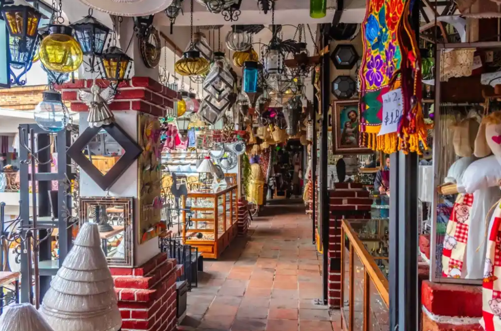

Este mercado de artesanías fue construido con la finalidad de fomentar y difundir el trabajo realizado por los artesanos de Valle de Bravo. En este sitio es posible encontrar: cerámica de barro, hierro forjado, bordado, tejido, etc. Horario: Lunes a domingo, de 11:00 a l9 h.